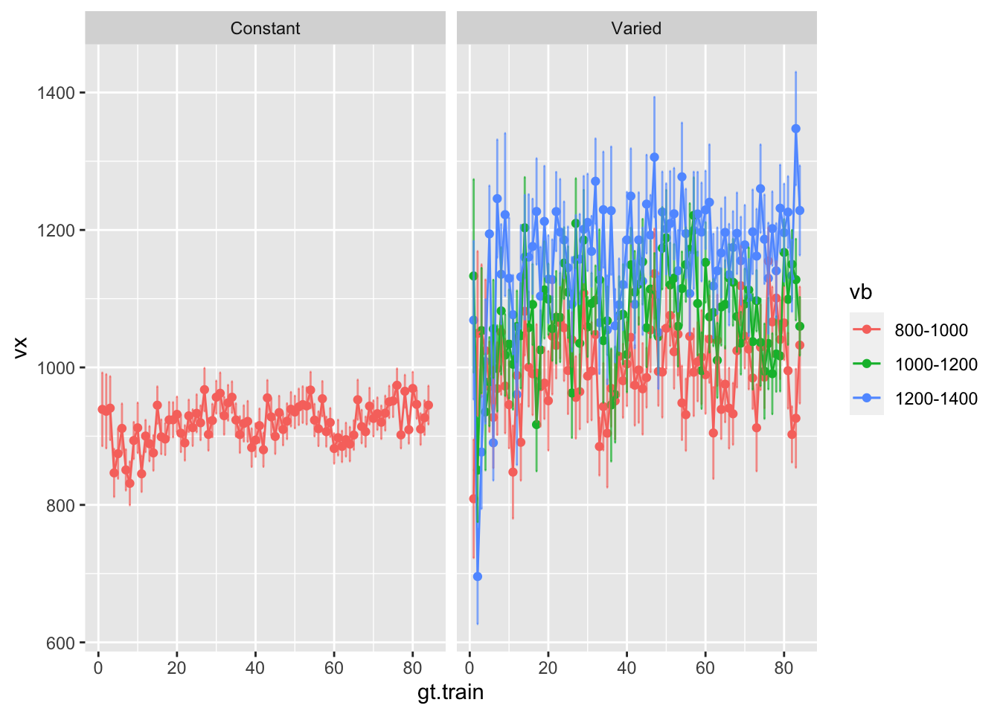

dst<-dst%>%filter(expMode=="train",bandOrder=="Original")vst<-dst%>%filter(condit=="Varied",gt.train<=84)%>%group_by(gt.train,vb,input)%>%summarise(sdVx=sd(vx),vx=mean(vx),sdDist=sd(dist),dist=mean(dist))%>%group_by(vb)%>%mutate(gt.trainBin=cut(gt.train,breaks=5,labels=c(1:5)), trial=gt.train)cst<-dst%>%filter(condit=="Constant",gt.train<=84)%>%group_by(gt.train,vb,input)%>%summarise(sdVx=sd(vx),vx=mean(vx),sdDist=sd(dist),dist=mean(dist))%>%group_by(vb)%>%mutate(gt.trainBin=cut(gt.train,breaks=5,labels=c(1:5)), trial=gt.train)ggplot(dst%>%filter(gt.train<=84), aes(x =gt.train, y =vx,color=vb))+geom_point(aes(color =vb), stat ="summary", fun =mean)+stat_summary(aes(color =vb), geom ="line", fun =mean)+stat_summary(geom="errorbar",fun.data=mean_se,width=.4,alpha=.7)+facet_wrap(~condit)

Code
# ggplot(vst, aes(x = gt.trainBin, y = vx,color=vb)) +# geom_point(aes(color = vb), stat = "summary", fun = mean) + # stat_summary(aes(color = vb), geom = "line", fun = mean) +# stat_summary(geom="errorbar",fun.data=mean_se,width=.4,alpha=.7)+facet_wrap(~condit)
n_prior_samples<-100prior_samples<-generate_prior(n_prior_samples)# Replace gt with dst in the following line:simulated_data<-future_map_dfc(seq_len(nrow(prior_samples)), function(idx){params<-prior_samples[idx, ]fit_alm_sim(vst, params$c, params$lr, params$noise_sd, params$inNodes, params$outNodes)},.options =furrr_options(seed =T))# Replace gt_obs with dst_obs and gt with dst in the following lines:dst_obs<-vst$vxtolerance<-0.1*sd(dst_obs)*500abc_result<-abc( target =dst_obs, param =prior_samples, sumstat =do.call(rbind, simulated_data), tol =.1, method ="rejection", names=colnames(dst_obs))posterior_samples<-abc_result$unadj.valuescolnames(posterior_samples)<-c("c", "lr", "noise_sd", "inNodes", "outNodes")posterior_samples_long<-tidyr::pivot_longer(as.data.frame(posterior_samples), everything())postV<-ggplot(posterior_samples_long, aes(x=value))+geom_density()+facet_wrap(~name, scales="free")+theme_minimal()+labs(x="Value", y="Density", title="Posterior Density Plots")summary_statistics<-data.frame(mean =apply(posterior_samples, 2, mean), median =apply(posterior_samples, 2, median))(summary_statistics=rownames_to_column(summary_statistics,var="parameter"))s=sim_train(dat=mutate(vst,trial=gt.train),c=summary_statistics$mean[1],lr=summary_statistics$mean[2],inNodes=summary_statistics$mean[4],outNodes=summary_statistics$mean[5],noise_sd=summary_statistics$mean[3])ggp<-vst%>%ungroup()%>%mutate(pred=s$almTrain,input=as.factor(input))gvp<-ggp%>%ggplot(aes(x =trial, y =pred, color =input))+geom_line()+ylim(c(0,1600))+ggtitle("ALM Predictions (ABC estimation)")gvo<-ggp%>%ggplot(aes(x =trial, y =vx, color =input))+geom_line()+ylim(c(0,1600))+ggtitle("HTW Observed Training data")ggpv<-postV/(gvp+gvo)#ggsave("images/abc_varied.png",ggpv,width=12,height=10)
# c=1; lr=.5; noise_sd=.001; inNodes=7; outNodes=32n_prior_samples<-1000prior_samples<-generate_prior(n_prior_samples)# Replace gt with dst in the following line:simulated_dataC<-future_map_dfc(seq_len(nrow(prior_samples)), function(idx){params<-prior_samples[idx, ]fit_alm_sim(cst, params$c, params$lr, params$noise_sd, params$inNodes, params$outNodes)},.options =furrr_options(seed =T))# Replace gt_obs with dst_obs and gt with dst in the following lines:cst_obs<-cst$vxtolerance<-0.1*sd(dst_obs)*500abc_result<-abc( target =cst_obs, param =prior_samples, sumstat =do.call(rbind, simulated_dataC), tol =.1, method ="rejection", names=colnames(cst_obs))posterior_samples<-abc_result$unadj.valuescolnames(posterior_samples)<-c("c", "lr", "noise_sd", "inNodes", "outNodes")posterior_samples_long<-tidyr::pivot_longer(as.data.frame(posterior_samples), everything())postC<-ggplot(posterior_samples_long, aes(x=value))+geom_density()+facet_wrap(~name, scales="free")+theme_minimal()+labs(x="Value", y="Density", title="Posterior Density Plots")summary_statisticsC<-data.frame(mean =apply(posterior_samples, 2, mean), median =apply(posterior_samples, 2, median))summary_statisticsC=rownames_to_column(summary_statisticsC,var="parameter")summary_statisticsCsC=sim_train(dat=mutate(cst,trial=gt.train),c=summary_statisticsC$mean[1],lr=summary_statisticsC$mean[2],inNodes=summary_statisticsC$mean[4],outNodes=summary_statisticsC$mean[5],noise_sd=summary_statisticsC$mean[3])ggpC<-cst%>%ungroup()%>%mutate(pred=sC$almTrain,input=as.factor(input))gcp<-ggpC%>%ggplot(aes(x =trial, y =pred, color =input))+geom_line()+ylim(c(0,1600))+ggtitle("ALM Predictions (ABC estimation)")gco<-ggpC%>%ggplot(aes(x =trial, y =vx, color =input))+geom_line()+ylim(c(0,1600))+ggtitle("HTW Observed Constant Training data")postC/(gcp+gco)ggsave(here("images/abc_constant.png",postC/(gcp+gco),width=12,height=10))